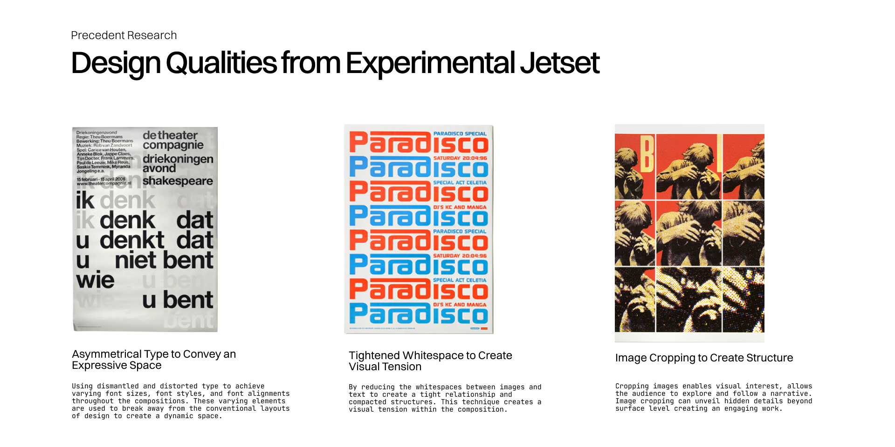
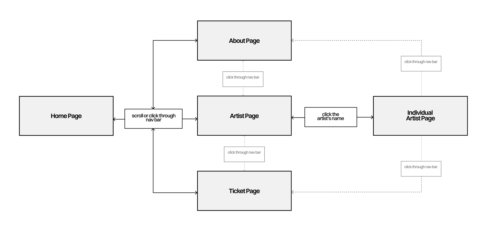

Video Walkthrough
About the Client
Strange Sounds From Beyond is a music festival in Amsterdam that celebrates diverse genres of music, drawing music enthusiasts seeking unconventional and unique sounds. The result is an immersive experience that unites different music cultures.
Target Audience
The targeted audiences are individuals seeking information about the festival and featured artists. The microsite also targets individuals interested in delving into the artists’ music and gaining a sense of the festival's ambiance. Below is a diagram to describe the user’s needs and wants prior to or when visiting the microsite.
Design Qualities
The project began by researching our precedent designer, Experimental Jetset, a Dutch-based design agency that focuses on printed material and design installations. Their work draws heavily from the Amsterdam cultural landscape, which blends orderliness with countercultural movements, and their experience in post-Provo, politically charged Dutch. By studying their works, the team has extracted three design qualities and principles to direct the art direction:
Design Qualities
“Design is driven by strongly defined concept.” This is something I learned when I was taking the class. To steer the microsite into a strong design concept, I developed some strategies that would assist the team in driving the content and design of the microsite:
Specific elements and interactions to capture the essence of post-punk within the festival.
SSFB strives to provide an unorthodox musical experience, aligning with the rebellious spirit of the post-punk movement. The microsite aims to accentuate the festival’s commitment to defy conventionality through specific graphic elements and interactions.
A curated selection of media to showcase the festival’s ideology to go against the tradition.
To capture the rebellious spirit of the post-punk movement in SSFB, we used a grainy treatment for the media to evoke the essence of the era. Additionally, our curation of media aims to showcase the festival's boundary-breaking aspects, providing users with an insight into the event.
What is the Post-Punk?
Against the Tradition and Challenge the Convention
Drawing inspiration from artists like the Smiths, Post-punk is a genre of music that emerged in the late 70s. Post-punk musicians departed from punk's traditional elements, instead adopting a more experimental and expressive approach. Spearheaded by a younger generation, the post-punk movement gained popularity for its inclination towards rebellion against political and social conventions, which aligns with the unconventional nature of Strange Sounds from Beyond.
How did the concept emerge?
Upon researching Experimental Jetset, I discovered that their design philosophy is deeply influenced by the punk era and Amsterdam's countercultural movements, which emphasized breaking tradition and pushing boundaries. Similarly, Strange Sounds from Beyond aims to provide its audience with unconventional and unorthodox music, aligning with Experimental Jetset's ethos. To delve deeper into this connection, I explored 1970s Amsterdam and punk music further. Through this research, the concept of post-punk emerged as a representation of the rebellious spirit of both the era and the festival itself.
Graphical Exploration
To explore the potential art direction, we utilized a combination of the design qualities we extracted and our research to develop three distinct lines of posters. From there, we pursued three weeks of graphic experimentation in posters to develop the art directions for the event. We continue to develop ideas that align with the music festival and diverge on what we see potential in. Above are some iterations that I have created in the first iteration:

Above: Moving onto the second week of graphical exploration, I developed the first poster. The asymmetrical alignment of the image and header against the structured hierarchy of other elements project the festival’s post-punk and unconventional characteristics while injecting dynamics into the poster. In addition, the image of a fetus was chosen to symbolize the saying, “good music makes people feel like they have been rebirthed.”

Above: Moving towards the final week of graphical explorations, images above display the refined posters after receiving feedback from the teaching team where I developed the first poster. The team identified that the image treatment obscured the content of the images. Therefore, we focused on improving the images and colours for each poster to enhance the communication of media content without taking away the abstract quality.
Graphical Exploration

Above: Mockups that the team created. With three distinct art directions, the team has created various assets to test the flexibility of each art direction. I took the initiative to research and find assets that reflect on the music festival and the host city, Amsterdam. Since I developed the poster for the first art direction, I focused on creating assets that will match the poster. Using photoshop, I placed the design into the Zeeburgereiland skatepark as the idea of a skatepark align with the rebellious essence of the music festival and poster.
Chosen Art Direction

After some iterations, the team has chosen the art direction that I establish for its asymmetrical placement of elements that disrupt the rigid grid, grainy image treatment, the use of contrasting bold colours, and a strong sense of post-punk, which reflects the festival’s objective to challenge traditional musical preferences.
Print to Digital Translation

Drawing inspiration from the selected art direction, we transitioned print assets into digital formats and explored three prototypes. These prototypes emphasized the interplay between graphic elements and grids, showcasing the complete flow across the home, about, artist, and checkout pages. I took the lead in designing and prototyping the most functional line.
Page Flow of Microsite
In developing each line, I crafted distinct user flows to explore various possibilities. Below is the finalized user flow that I created for the project:
Media Selection
Curating the Appropriate Media to Convey a Message
After experimenting with different image and video treatments, I decided to incorporate grain and colour adjustments to evoke the essence of a camcorder, reminiscent of the post-punk era. This choice aligned with the identity of the microsite, which was driven by the concept of that era. I selected specific performance videos of artists to showcase their talent while immersing users in the context and information relevant to each page they visit on the site.
Furthermore, the songs and artists were strategically selected to encapsulate the festival's unconventional essence. This involved sifting through hours of songs and videos to curate the most fitting content. The decision to incorporate background videos and music was made to immerse users in the ambiance of the festival as the target audience comprises individuals keen on exploring the artists' music and experiencing the festival's atmosphere. This approach provides users with a comprehensive sense of the event's vibe and character.
Lesson Learned
“This is a team project, not solo”
Towards the end of the project, we acknowledged the necessity to split into two teams (prototype and content design). Despite everyone's eagerness to create prototypes, I took a step back and emphasized the importance of identifying our strengths to serve the project's collective goal of excellence. Recognizing my proficiency in research, I volunteered for a leading role in content design and research. This experience underscored the importance of effective communication and speaking up in situations to resolve conflicts for the team's benefit.
“Don’t Design with your Head”
A key takeaway from this project is the importance of asking "why" in the design process. Understanding the rationale behind design decisions and conducting in-depth research is crucial for creating meaningful designs. I've also learned that it's hard to land a design on the first attempt. Countless iterations play a key role in taking the project to a higher level of quality.